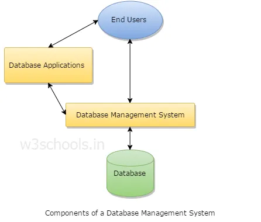

A database management system (DBMS) refers to the technology for creating and managing databases. DBMS is a software tool to organize (create, retrieve, update, and manage) data in a database.
The main aim of a DBMS is to supply a way to store up and retrieve database information that is both convenient and efficient. By data, we mean known facts that can be recorded and that have embedded meaning. Usually, people use software such as DBASE IV or V, Microsoft ACCESS, or EXCEL to store data in the form of a database. A datum is a unit of data. Meaningful data combined to form information. Hence, information is interpreted data - data provided with semantics. MS. ACCESS is one of the most common examples of database management software.
More on Data, Information, and Knowledge
Knowledge refers to the useful use of information. As you know, that information can be transported, stored, and shared without any problems and difficulties, but the same cannot be said about knowledge. Knowledge necessarily involves personal experience and practice.
Database systems are meant to handle an extensive collection of information. Management of data involves both defining structures for storage of information and providing mechanisms that can do the manipulation of those stored information. Moreover, the database system must ensure the safety of the information stored, despite system crashes or attempts at unauthorized access.
Why Use DBMS
To develop software applications In less time.
Data independence and efficient use of data.
For uniform data administration.
For data integrity and security.
For concurrent access to data, and data recovery from crashes.
To use user-friendly declarative query language.
Where is Database Management System (DBMS) being used?
A DBMS manages data and has many benefits. These are:
Data independence:
Application programs should be as free or independent as possible from details of data representation and storage. DBMS can supply an abstract view of the data for insulating application code from such facts.
Efficient data access:
DBMS utilizes a mixture of sophisticated concepts and techniques for storing and retrieving data competently. This feature becomes important in cases where the data is stored on external storage devices.
Data integrity and security:
If data is accessed through the DBMS, the DBMS can enforce integrity constraints on the data.
Data administration:
When several users share the data, integrating the administration of data can offer significant improvements. Experienced professionals understand the nature of the data being managed and can be responsible for organizing the data representation to reduce redundancy and make the data to retrieve efficiently.
Components of DBMS

Users:
Users may be of any kind such as DB administrator, System developer, or database users.
Database application:
Database application may be Departmental, Personal, organization's and/or Internal.
DBMS:
Software that allows users to create and manipulate database access,
Database:
Collection of logical data as a single unit.